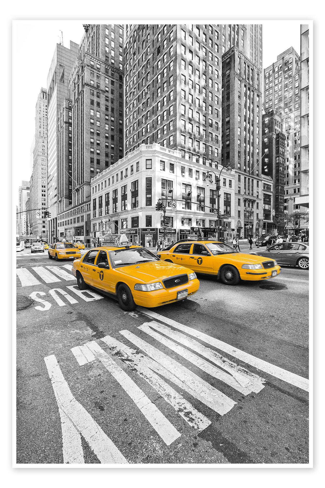
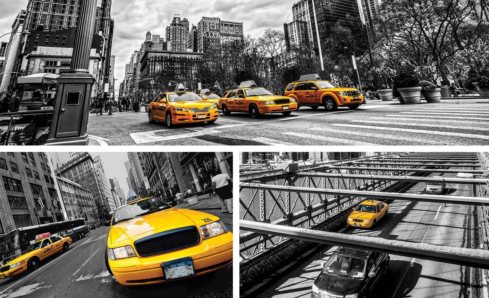
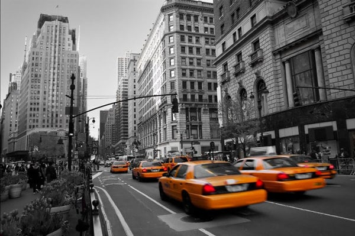

¿Quienes somos?...
MoviPlus es una empresa líder en el transporte de personas, con 15 años de trayectoria en los Estados Unidos. Actualmente, nos dedicamos al traslado de personas con una confortable flota de modernos autobuses. Sin embargo, estamos listos para expandir nuestro servicio al mercado de los taxis en Nueva York. Con esta iniciativa, MoviPlus busca ofrecer a sus clientes una forma rápida, segura y eficiente de trasladarse por la ciudad, al tiempo que contribuye a la protección del medio ambiente. Con un enfoque en la "excelencia en movimiento", nos esforzamos por brindar un servicio de transporte de calidad, cuidando el bienestar de nuestros pasajeros y el entorno en el que operamos.


En MoviPlus, somos conscientes de la creciente tendencia mundial hacia la adopción de tecnologías más limpias y sostenibles, por lo que estamos decididos a liderar el cambio en la industria del transporte. Como parte de este compromiso, la empresa planea integrar autos eléctricos a su flota, en consonancia con nuestra visión de promover la movilidad sostenible y la protección del medio ambiente. MoviPlus entendemos que, aunque los vehículos eléctricos todavía dejan una huella de carbono considerable, su incorporación representa un paso crucial hacia la reducción de la contaminación atmosférica y sonora en la bulliciosa ciudad de Nueva York. Este cambio no solo ayudará a mejorar la calidad del aire, sino que también contribuirá a la creación de un entorno urbano más tranquilo y habitable. MoviPlus ve este cambio como un primer paso importante hacia un futuro más sostenible y nos comprometemos a seguir explorando formas de minimizar nuestro impacto en el medio ambiente, mientras continuamos ofreciendo un servicio de transporte de alta calidad a nuestros clientes.